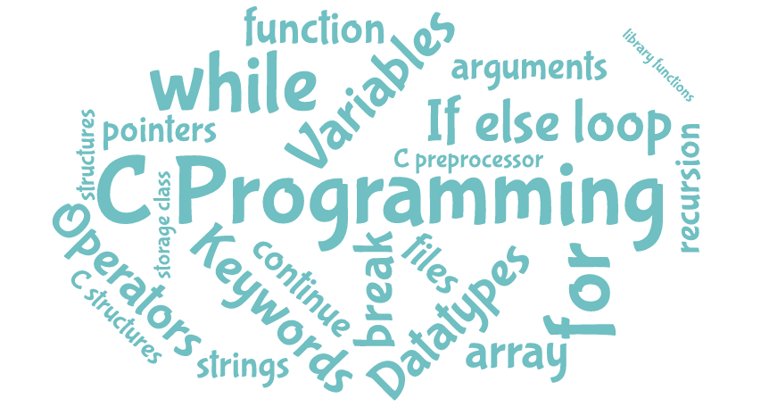
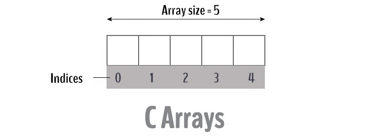
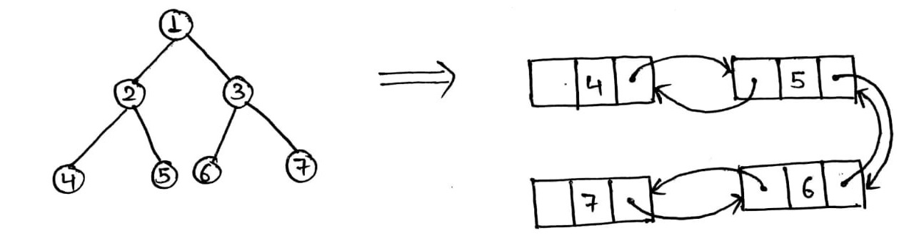
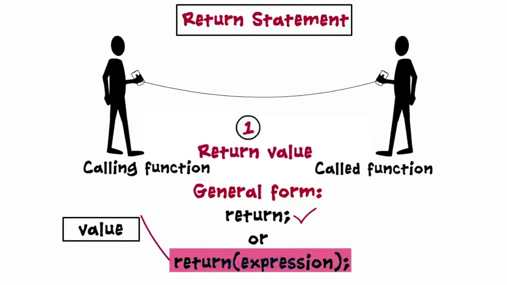
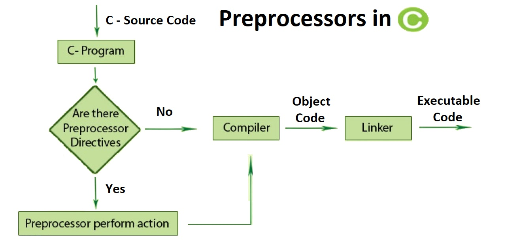

Programming in C
Rules

1. Introduction
Any program we write must be error-free in these three ways: lexically, syntactically and semantically.A complete set of well-known commands is called an instruction list, sometimes abbreviated to IL.
Portability is the ability of software/program to be transferred from one machine or system to another.
The program (which in fact is just a text) is called the source code, or simply source, while the file that contains the source is called the source file and ends with the suffix ".c".
Octal representation number is preceded by the 0 digit.
Hexadecimal representation number is preceded by the 0x digit.
Rules to create a Variable:
- must be composed of upper-case or lower-case Latin letters, digits and the character "_" (underscore which is a letter)
- must begin with a letter
- is case Sensitive.
2. Data types, flow control and operations
2.1. Data types
The types (int, char, bool…) are attributes.Scientific notation: 9e-5 is equivalent to 9E-5.
An implementation dependent issue is the second (and uglier) face of software portability, system reacts differently when we try to save a float into an integer.
A loss of accuracy could happen when we try to save a float into an integer.
IBM mainframes use a code commonly called EBCDIC (Extended Binary Coded Decimal Interchange Code) which is very different from ASCII and is based on radically different concepts.
ASCII : short for American Standard Code for Information Interchange.
The literal is a symbol uniquely identifies its value, the literal means itself.
\r denotes a return to the beginning of the line CR (Carriage Return).
\a as in alarm, bell.
\0 null
\n line feed;
To create a character which value is backslash: char backslash = ‘\\‘;
For printf("format",var) and scanf("format",var), format can be:
- %d (as in decimal) or %i (as in integer) for a value of type int presented as a fixed-point decimal number.
- %x (as in hexadecimal) for a value of type int presented as a fixed-point hexadecimal number.
If value is int or long, it will convert it to hex value. %02x means if your provided value is less than two digits then 0 will be prepended. - %o (as in octal) for a value of type int presented as a fixed-point octal number.
- %c (as in char) for a value of type int or char and should be presented as a character.
- %f (as in float) for a value of type float and should be presented as a floating-point number.
For a type T which uses Xbytes, there is 2^(X*8) possible literals where 2 is related to 0 or 1 (binary) and 8 because 1byte equal 8bits.
If float uses 4bytes on a system then it has 8 precise digits the two others are for the signe and the point.
Explicit conversions typecast: (type)value.
2.2. Flow control
Switch and If:switch(i)
{
case 1:
Statement;
break;
case 2:
Statement;
break;
....
case n:
Statement;
break;
default:
Statement;
}
If break is missing the nexts cases will be executed until the next break or the end.Loops:if(condition) { statements; }else if(condition) { statements; .... }else{ statements; }
while(conditional_expression)
{
statements;
}do{ statements; }while(condition);
for(initialization; checking; modifying)
{
statements;
}break exits the loop immediately and unconditionally ends the loop’s operation.
continue ends the body or the statement step {}, and the loop’s condition is test immediately.
2.3. Operations
There is 3 types of operators: unary, binary and ternary.In i % j, i and j have to be integer. 0 % 5 = 0
Logic operators: && (binary and), || (binary or), ! (unary negation).
De Morgan's laws: The negation of a conjunction is the disjunction of the negations.The negation of a disjunction is the conjunction of the negation:
!(p && q) == !p || !q
!(p || q) == !p && !q
Bitwise operators:
- & (ampersand) bitwise conjunction, requires exactly two “1” to provide “1”.
- | (bar) bitwise disjunction, requires at least one “1” to provide “1”.
- ~ (tilde) bitwise negation, unary.
- ^ (caret) bitwise exclusive or, requires exactly one “1” to provide “1”.
- << shifts left and adds zeros at the right end.
- >> shifts right and adds either 0s, if value is an unsigned type, or extends the top bit (to preserve the sign) if its a signed type.
Operation: ++variable / --variable: Increment/decrement the variable by 1 and return its new value.
Operation: variable++ / variable--: Return the original (unchanged) variable's value and then increment/decrement it by 1.
3. Aggregating data into arrays

Initialize vector: int V[5] = {1,2,3,4,5}; is similar to int V[] = {1,2,3,4,5};
Initialize array : type A[x][y][... ] i.e. int A[2][3][2]
Pointer declaration: int* ptr; to initialize: int *ptr = NULL;
To access a variable address we need the reference operator &: ptr = &var;
Dereferencing is an operation where the pointer variable becomes synonymous with the value it points to.
Dereferencing NULL pointers is strictly forbidden, it leads to a runtime error.
The sizeof operator provides information on how many bytes of memory its argument occupies.
i.e. for an integer a: sizeof a; or sizeof(a); for the type: sizeof(char);
when an array is declared int Arr[5]; Arr is a pointer which points to the address of Arr[0].
Arithmetic of pointers, allows operations:
- Addition ptr + int return a ptr;
- Soustractions ptr – int return a ptr and ptr – ptr return an int ;
- Comparaisons ptr == ptr return 1, ptr != ptr return 0;.
If we do b += 1; c += 2; d= b - c; then d = -1.
In char *name = "theName"; a variable of type char* named name is created and points to the string reserved by the compiler "theName".
i.e. char *name = "theName"; char *A; A = name; name = "name2"; then name equal "name2" and A equal "theName". Some built in functions: (For all of them, destination has to have an address and suffisant room otherwise the program will have a runtime error)
- copy a string char* strcpy(char* destination, char* source); return destination.
i.e. char dest[] = "thiswillchange"; strcpy(dest, "arsene"); then dest equal arsene. - copy part of a string char* strncpy(char* destination, char* source, int n); return destination.
i.e. char dest[] = thiswillchange"; strncpy(dest, "Alice has a cat", 5); then dest equal Alice. - print a string puts(char* str); i.e. puts("literal"); return 0 if goes well and -1 if not.
- lenght of a string int strlen(char*) i.e. char *ptr = "literal"; printf("%d",strlen(ptr)); will display 7.
- concatenate 2 strings char* strcat(char* destination, char* source); return destination.
i.e. char A[20] = "I’m "; char *B = strcat(A, "the first "); then B and A equal: I’m the first;
destination has to be fed at least with "\0" before using this function.
4. Arrays vs. structures

t[i] is the same as i[t].
void *ptr; is called an amorphous pointer.
Allocate memory (bytes):
void* malloc(int size); will return NULL if allocation fails
void free(void* ptr); to free the memory allocated.
Array (rows x cols) of pointers:int*ptr; ptr = (int*)malloc(sizeof(int));if(ptr ==NULL) {printf("Allocation fails");return1; } statements; ....free(ptr);
structureint**arr; arr = (int**)malloc(rows *sizeof(int*));for(r = 0; r < rows; r++) { arr[r] = (int*)malloc(cols *sizeof(int)); } statements; ....free(arr);
pointer to a structure:structBDay {intmonth, day, year; };structName {charfirstname[10], lastname[10];structBday bday; }; (in main)structName jo = {"Jo","Lee",{6,25,1995}};
Recursive declaration: A structure cannot be a field of itself, but any of the structure's fields can be a pointer to the structure currently declared. This type of data is called a one-way linked list.
Union:structlist {intdata;structlist *next; }; (in main)structlist *sptr; sptr = (structlist*)malloc(sizeof(structlist)); sptr->data = 4; sprt->next =NULL;
In union, only max member size is important, the size of the union is the size of the largest data type, only one member of a union can be accessed at one time, a union stores only one value (except some tricky code).unionBDay {intmonth, day, year; };
5. Functions

Declaration or Prototype: int function_name(void);
Definition:
The declaration has to be provided before the first invocation occurs.intfunction_name(intargument) { statements; ....return0; }
The blocks are opaque to the declarations contained therein. Variables are local.
A global variable is accessible to all functions in a source file.
The function can change the actual parameters value by using references and/or pointers (which remains unchanged).
Structures are always passed in function argument by value.
Arrays are always passed as a pointer to the first element, as follows:
int function_name(int *arr){...} same as int function_name(int arr[]){...}
Self implemented functions:
intmystrlen(char*str) {char*begin;for(begin = str; *str; str++);returnstr – begin; }
char*mystrcpy(char*dest,char*src) {char*res;for(res = dest; (*dest++ = *src++););returnres; }
In a function, if the formal parameter (argument) is an array, the size of the first dimension can be disregarded; but the remaining sizes have to be provided:char*mystrcat(char*dest,char*src) {char*res;for(res = dest; *dest++;);for(--dest; (*dest++ = *src++););returnres; }
void function(arr[][4]){...}
For allocated memory functions:
void function(int *arr[]); or void function(int **arr);
Parametrize the main function:
argc (argument counter): contains the number of arguments passed on to the program plus one;
argv[] (argument values): an array of pointers to strings containing the arguments supplied to the program; argv[0] contains the name of the running program, and the rest the string passed to the program as the first argument.
The ternary operator “?:”, usage: expression1?expression2:expression3
i.e. int i = (i > 0) ? 5 : 7; then if i > 0 then i = 5 otherwise i = 7.
The optimal function factorial:
intfactorial(intn) {returnn ? n * factorial (n - 1) : 1; }
6. Connecting to the real world: files and streams
In Unix\Linux they are different, Unix/Linux is case sensitive.
Programs written in “C” does not communicate with the files directly, but through an abstract entity called a stream.
Operations on the stream affect the real files using mechanisms contained in the operating system kernel.
The operation of connecting the stream with a file is called opening the file, while disconnecting this link is named closing the file.
Opening a stream can fail due to:
- the lack of a file with a specified name
- no allowance for opening an existing file
- too many streams opened simultaneously.
There are three basic modes used to open the stream: read, write and update (read and write):
- “r” open mode: read (must exist and for read only).
- “w” open mode: write (create if non existing and destroy if exist).
- “a” open mode: append (create if non existing and append if exist).
- “r+” open mode: read and update (must exist and for read and write).
- “w+” open mode: write and update (create if non existing and destroy if exist, read possible)
- “b” binary or “t” text mode has to be associated with the others, at the end. Text mode is necessary for programs running on Windows systems, but optional for programs designed for Unix environments (in these systems there is no translation of the end line characters). By default text mode is assumed if nothing is declared.
When the program runs three streams are opened (FILE *stdin, *stdout, *stderr; is executed) if the program contains the header #include <stdio.h>.FILE*file; file =fopen("path","rt");if(file ==NULL) {printf("File cannot be opened");return1; } statements; ....if(fclose("path") ==EOF) {printf("Problem closing the file");return2; }
The scanf function reads the data from stdin(standard input) by default, it’s the primary data source of running programs is associated with the keyboard, pre-opened for reading.
The printf function outputs the data to the stdout(standard output) stream, it’s the primary target for outputting data by the running program and associated with the screen, pre-opened for writing.
stderr (standard error output) is associated with the screen, pre-opened for writing and regarded as the primary place where the running program should send information on the errors encountered during its work.
By definition, the execution of any function operating on a stream sets the errno variable, with the error code identifying the reason for the failure.
The function strerror() contained in string.h, given an error number, returns a pointer to a text describing the meaning of the error.
i.e. printf("\nerrno = %d; Error code is: %s",errno, strerror(errno),"\n");.
int getchar(void); is same as fgetc(stdin);.
Some input built in functions:
- int fgetc(FILE *stream); to read a char from a file named stream, return EOF (-1) when there is no more char.
char* gets(char *str); is same as fgets(str, INT_MAX, stdin); where INT_MAX is a symbolic constant representing the maximum value of type int. - fgets(char *str, int maxsize, FILE *stream); return the value of char* str if all the max reading is successful otherwise return NULL and str keep its last value, not to be used for reading binary.
- fread(void *mem, int size, int count, FILE *stream); returns the number of successfully read portions, ideal for reading binary.
- fscanf(FILE *stream, const char *format, ...list of pointers to variables...); returns the number of values correctly read from the stream.
i.e. scanf("%d", &number); is same as fscanf(stdin, "%d", &number);.
- int fputc(int chr, FILE *stream); if the function succeeds, it returns the chr character code as its result (between 0-255) or returns EOF (-1) if fails.
int putchar(int chr); is same as fputc(chr, stdout);. - fputs(char *string, FILE *stream); if the function is successful, it returns a non-negative number else returns EOF.
int puts(char *string); is same as fputs(string, stdout); - int fwrite(void *mem, int size, int count, FILE *stream); returns the number of successfully (actually) written portions, ideal for reading binary but you can use it to create text files if endline characters is handled appropriately.
- int fprintf(FILE *stream, char *format, ...list of expressions...); returns the number of characters (not values, as opposed to the fscanf function) correctly written to the stream.
printf("%d", number); is same as fprintf(stdout, "%d", number);
- long ftell(FILE *stream); returns the distance (in bytes) counted from the beginning of the file to the current file position, returns EOF if any errors.
- int fseek(FILE *stream, long offset, int whence); in the event of an error, the function returns EOF (-1); otherwise, the return value is 0. Whence is the reference point (beginning SEEK_SET, current SEEK_CUR, or end SEEK_END).
- void rewind(FILE *stream); is same as fseek(stream, 0, SEEK_SET); except for the fact that rewind doesn’t return any value and it doesn't set the errno variable.
- int feof(FILE *stream); Function end of file, returns a non-zero value if the stream is in the EOF state; and otherwise, the return value is 0.
7. Preprocessor and declarations

gcc -E program_name.c output_file_name in the command line preserve the preprocessed text in a file.
The “\” character can be used in the place where the directive is broken into two lines.
#include <file_name> file in the compiler's default directory.
#include “file_name” file in the same directory as the file containing the directive.
#define IDENTIFIER text used to replace IDENTIFIER by text everywhere in the code. IDENTIFIER is called a macro and this process is a macro substitution.
#define identifier(parameter_list) text.
#define IDEN can be undefine as follow #undef IDEN. Identifiers defined by the preprocessor itself:
- __LINE__ integer literal equal to the line number, where the symbol appears.
- __FILE__ string literal containing the name of the source file in which the identifier was used.
- __DATE__ string literal containing text denoting the day the source file was compiled. This date string always contains 11 characters.
- __TIME__ string literal containing text denoting the time (hours, minutes, seconds) the source file was compiled, always 8 characters.
- __STDC__ identifier (as in Standard C) is defined if and only if the following statement is true: the compiler is operating in compliance with the ANSI “C” standard.
#define QUOTE(X) #X to quote X.
#if, #elif, #else, and #endif directives:
#if defined(IDENT) or #ifdef IDENT
#if !defined(IDENT) or #ifndef IDENT.
gcc -D DEBUG filec.c to define an identifier (DEBUG in this case) outside the source code.
To avoid defining a header file more than once, one should check if isn’t already defined: (in header.h file)
#Internal linkage: each repeated identifier declaration inside one source file denotes the same object;ifndef__HEADER_H__ #define__HEADER_H__ .... (header file content) .... #endif
External linkage: each repeated identifier in the entire program denotes the same object;
No linkage: means that every declaration describes a unique object.
Mechanism of hiding.
The storage class: extern, static and register.
- extern specifier makes a variable accessible in another module.
- static specifier means that the variable declared once is brought to life when the program starts and is destroyed when the program finishes its work. It’s opposed to auto. When the scope of the variable is the module, declared with static it can’t be extern to his module. static attribute with function means that scope is limited to the file in which its declaration occurs (internal-linkage) even if extern is used.
A function can be a function argument:
int function(int (*function_argument)(int)){...}.